У підвалі у нас розташовується малюнок лева і контактна інформація. Якщо проаналізувати зображення, видно, що воно не однорідне - трава ліворуч, праворуч і центром відрізняється. Також вона накладається поверх лінії.
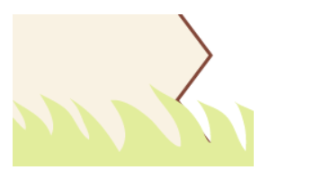Трава відображається поверх кордону
Ще один момент, який слід врахувати заздалегідь - як відображати підвал за невеликого обсягу контенту. Можливий підвал, що «висить», внизу якого відображається фон веб-сторінки або підвал, заповнений до нижнього краю вікна.
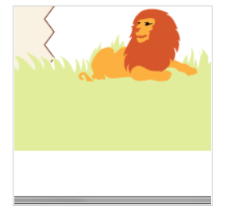а. Висячий підвал
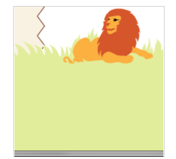б. Підвал притиснутий до краю
Насправді притискати підвал до нижнього краю не доведеться, достатньо заповнити порожній простір під підвалом тим самим кольором, що й у трави. За рахунок такого трюку буде створюватися враження, що підвал займає весь простір, що залишився.
Способів додавання малюнка трави для підвалу кілька, підемо найпростішим шляхом і зробимо його тлом. Зображення, щоб воно коректно виглядало на різних дозволах, доведеться задати досить великим, 2000 пікселів за шириною. Картинка ставиться через властивість background та у параметрах її становище вказується по центру значенням 50% 0.
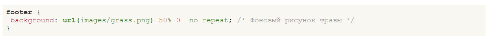Малюнок із травою спеціально виконаний вузьким та має висоту 27 пікселів, що явно недостатньо для висоти нашого підвалу, тому доповнимо малюнок тим же фоновим кольором #e2ed9c. Для цього додамо шар із ім'ям footer-bg і для нього вкажемо необхідний колір тла.
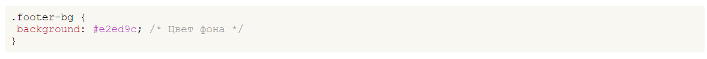Код HTML буде простим.
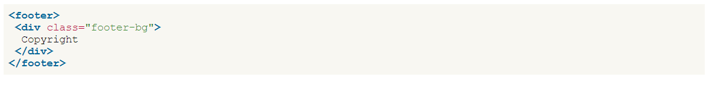Ширина цих шарів явно не вказана, тому вона займає всю доступну ширину, тому текст буде вирівнюватись по лівому краю. Необхідно обмежити текст нашим макетом, для цього увімкнемо додатковий шар copyright і для нього вкажемо ширину та вирівнювання по центру.
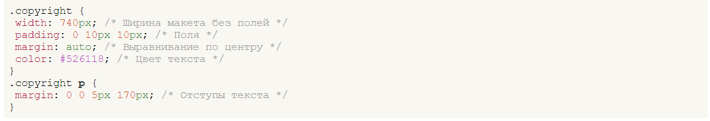Тут до ширини контенту (width) додається значення padding ліворуч і праворуч, що й дає ширину нашого макета в 760px. Текст зсувається вправо за допомогою універсальної властивості margin, що додається до селектора P. Код для створення підвалу та тексту:

Залишилося тільки включити малюнок з левом, що лежить, і остаточно підкоригувати стилі. Лева додамо у вигляді звичайного зображення через тег <img>, а щоб керувати його положенням, помістимо малюнок у <div> з класом lion. Втім, цей клас можна встановити безпосередньо тегу <img>. Остаточний код нашого підвалу наведено в прикладі.
Код підвалу
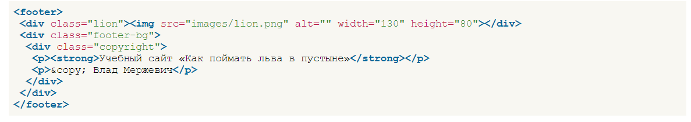Положення лева вкажемо за допомогою позиціонування. І тому батьківському елементу <footer> слід зазначити властивість position як relative, а елементу lion як absolute. У разі властивості left і top керують координатами щодо батька, тобто <footer>. Однак тут є одна складність, що <footer> займає всю ширину сторінки, а лева треба встановити щодо макета в 760px. Значення для left не можна вказати, тому що ми не знаємо, чому в пікселах дорівнює відстань від лівого краю браузера до лівого краю макета. Скористаємося наступним трюком: для left встановимо 50%, що вирівняє край малюнка по центральній осі, і щодо цього положення зрушуватимемо малюнок властивістю margin-left з негативним (вліво) або позитивним (вправо) значенням.
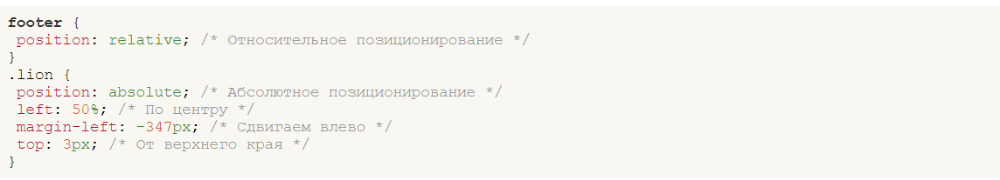Значення margin-left та top підбираються досвідченим шляхом, щоб досягти найкращого результату.
Додавання малюнка вносить плутанину з фоновими малюнками, і вони починають накладатися один на одного, так що настав час відновити їх споконвічне місце. Для початку зрушимо малюнок із травою вниз на 53 пікселі. Це число вийшло відніманням з висоти малюнка лева (80px) висоти малюнка трави (27px). І піднімемо наш підвал цілком на 77–80 пікселів. По-перше, підняти треба, тому що через малюнок лева підвал опускається вниз, по-друге, отримаємо накладення підвалу на межу макета, як показано на рис.
На жаль, всі ці дії не мають жодного сенсу, тому що через ефект відступів, що хлопаються. становище елементів вважається зовсім інакше. Скасувати цей ефект можна різними способами, наприклад, з допомогою полів, кордонів, абсолютного позиціонування, але у конкретному разі де вони підходять. Тут поля і межі виявляться зайвими. Так що згадаємо ще один спосіб і додамо властивість overflow з значенням auto. Взагалі-то ця властивість при необхідності додає смуги прокручування, якщо контент міститься в задані розміри. Але зараз overflow нам потрібно тільки для одного — скасувати відступи, що хлопаються.
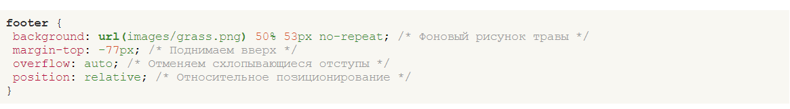Текст у підвалі та зелене тло також піднімається вгору, тому для шару footer-bg треба встановити відступ зверху на висоту малюнку лева.
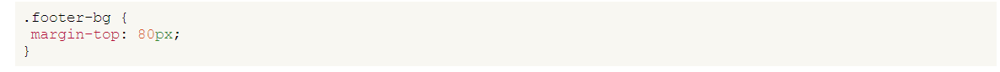Остаточно для контенту основної частини додаємо поле знизу, що дорівнює висоті малюнка, щоб текст не закривався підвалом.
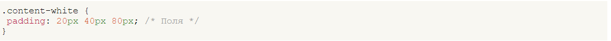Стиль для підвалу наведено у прикладі:
Стиль підвалу
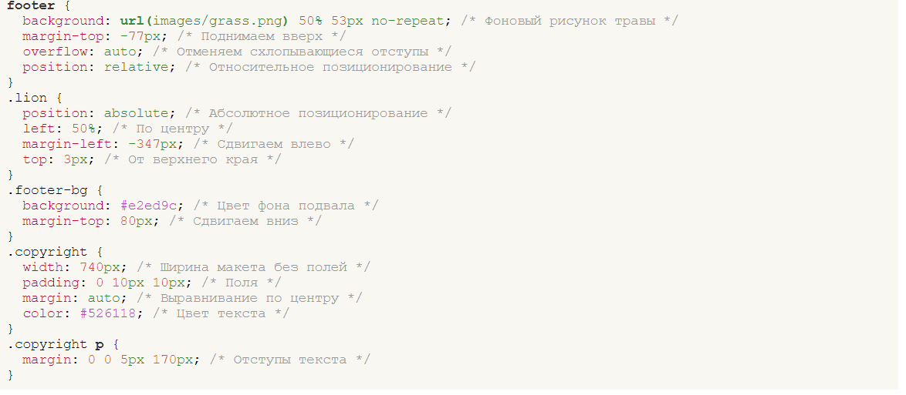Залишилося вирішити останнє питання, робити підвал висить чи ні. Вся реалізація, показана вище, спрямована на підвал, що висить, змінити поведінку можна всього лише перенісши background з footer-bg в BODY. Хоча ця дія встановить зелений колір фону для всієї сторінки цілком, помітно це буде тільки там, де видно простір під підвалом. Для решти розділів на кшталт шапки, основної частини задано свій власний колір фону, тому включення фону для селектора BODY на них не вплине.
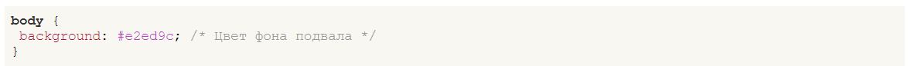